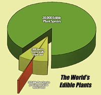
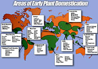

About 200,000 flowering plant species exist in the world but only about ten provide the bulk of human food.
Worldwide, about 3000 species have been used as food but only 200 have been domesticated. Many of the top ten species are
cereals or grasses such as wheat rich and maize with seeds rich in complex carbohydrates, oils and protein.
These crops occupy 70 % of the world's cropland and produce one half of the calories needed for human food. Others such as sugarcane,
potatoes, yams, banana and cassava produce energy-rich starches and sugars but are deficient in protein. Soybean makes the top ten
crops and together with other pulses such as peas, lentils and beans provide many people on largely vegetarian diets with the essential protein they need.

Determining the exact time and geographical origin of domestic plants is difficult.
Presence of plant remains in archeological sites may indicate only a use of a wild species not domestication.
It is believed that most plants were domesticated in or near their wild habitat.
Separate and distant domestications usually involve different wild species.
Cotton for example involved four different species in India, Africa, Lowland and Highland America.
Interestingly, the American species appear to be natural hybrids of local plants and species originating in the Far East.
How are Old World species introduced to the New World?
Some are carried by people migrating across the oceans; some on the backs or in the stomachs of animals and birds; still others, by floating
on the winds and tides.
|